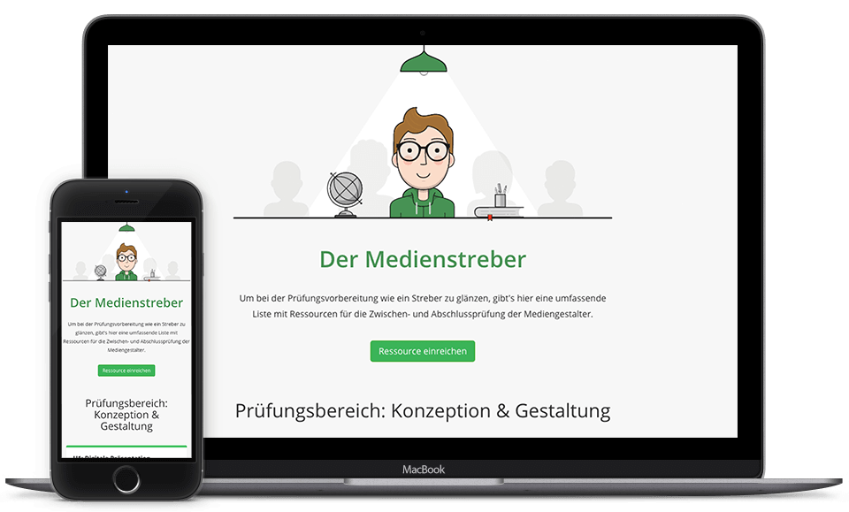

I started this project to help graphic design trainees prepare for their final exam. It's basically I long list of high quality ressources and information about the exam.
My graphic design apprenticeship was coming to an end and with that the final exam was right around the corner. I created this small site as part of my preperation. It basically is just a long list of usefull links about the different exam topics. Be it a blog post, a handwritten fact sheet, a good book recommendation or just a wikipedia article. I got pretty much every topic covered with a few helpfull links.
The project was accepted really well by everyone else doing an graphic design apprenticeship and got shared quite a lot on Facebook and Twitter. I guess I helped a few people with their exam and that is really something I'm proud of.
As always, I kept everything really simple and straight forward. Just a list with usefull links. No more, no less. "Medienstreber" can be roughly translated to design nerd. I thought it would be interesting to create a cute character to give everything a more polished and friendly look. So I asked Laura Dinslage (a fellow coworker) to help me out. I think she did a great job and I'm really happy how the illustration turned out.
The last couple projects I was working on were built with Jekyll. This one is as well. I really like the fast loading speed and easy implementation static sites offer. I'm not really familiar with backend and server side development, so using a static site builder works great for me. Other than that it was a great practice trying out different approaches for creating the "pinterest effect". I tried things like Masonry and Isotope but in the end I settled on a simple CSS only solution. The site is not using JS at all, which I guess is a great thing.